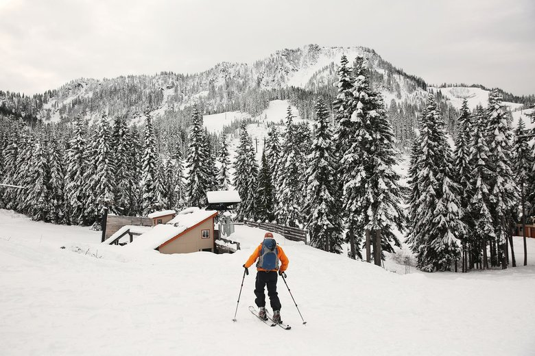
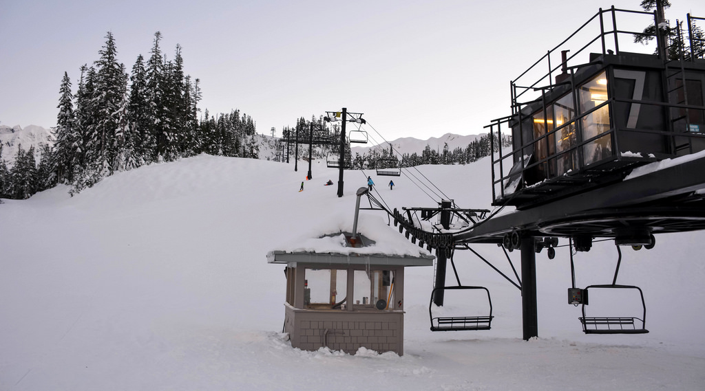

The Snowy Scoop
The Snow
Snowfall
49 Degrees North
10"
Alpental
9"
Bluewood
14"
Crytsal Mt.
13"
Mission Ridge
8"
Mt. Baker
11"
Mt. Spokane
10"
Stevens Pass
16"
Snoqualmie
12"
White Pass
11"
The Scoop
Reviews
49 Degrees North
4 star rating
Alpental
3.5 star rating
Bluewood
4.5 star rating
Crytsal Mt.
4.5 star rating
Mission Ridge
4 star rating
Mt. Baker
4 star rating
Mt. Spokane
3 star rating
Stevens Pass
5 star rating
Snoqualmie
4.5 star rating
White Pass
3.5 star rating
This information is inaccurate as this is a mock website

Stevens Pass Chief Chairlift

Mt. Baker Chair #7